Art · the seven seats, drawn
The art
One picture per seat per set — no variants, no duplicates. A dossier card, a portrait, a character sheet, and a 4K wallpaper for each of the seven, plus the base set the site already uses (roster cards, team composite, loop diagram). Click any image for the full-size file.
Set 01 · the dossier cards
Dossier cards

art/dossiers/mei.jpg · 414 KB
art/dossiers/elo.jpg · 408 KB
art/dossiers/yui.jpg · 416 KB
art/dossiers/niko.jpg · 414 KB
art/dossiers/rin.jpg · 275 KB{kind=link}
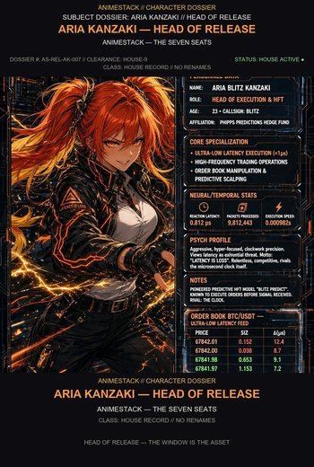
art/dossiers/aria.jpg · 481 KB
art/dossiers/reika.jpg · 344 KBSet 02 · portraits
Portraits
{kind=link}
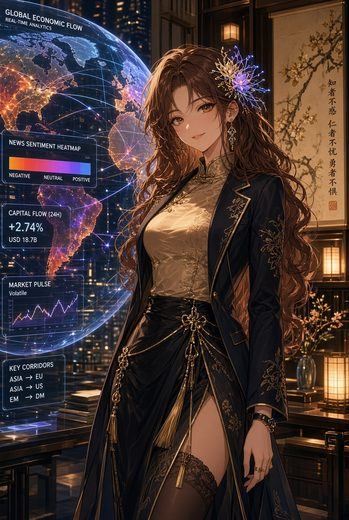
assets/img/mei-portrait.jpg · 471 KB{kind=link}
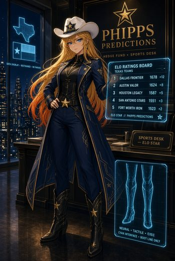
assets/img/elo-portrait.jpg · 395 KB{kind=link}
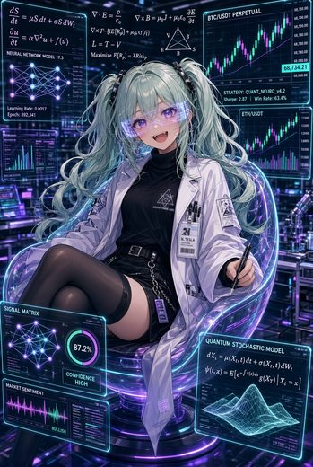
assets/img/yui-portrait.jpg · 502 KB{kind=link}
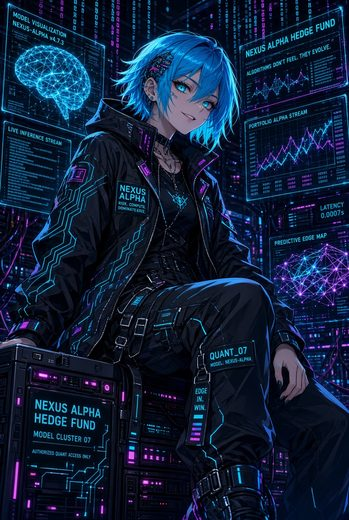
assets/img/niko-portrait.jpg · 521 KB{kind=link}
assets/img/rin-portrait.jpg · 323 KB{kind=link}
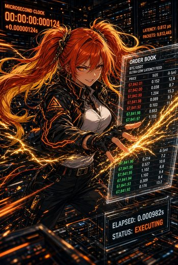
assets/img/aria-portrait.jpg · 570 KB{kind=link}
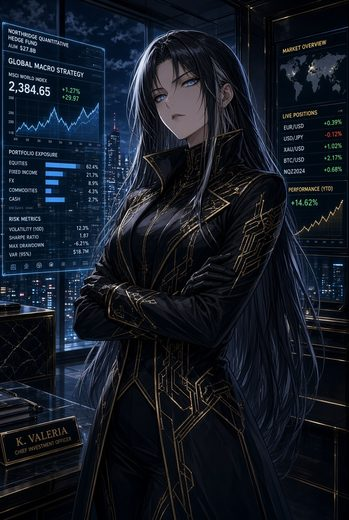
assets/img/reika-portrait.jpg · 404 KBSet 03 · character sheets
Character sheets

art/sheets/mei-sheet-1.jpg · 408 KB
art/sheets/elo-sheet-1.jpg · 435 KB
art/sheets/yui-sheet-1.jpg · 463 KB
art/sheets/niko-sheet-1.jpg · 308 KB
art/sheets/rin-sheet-1.jpg · 257 KB{kind=link}
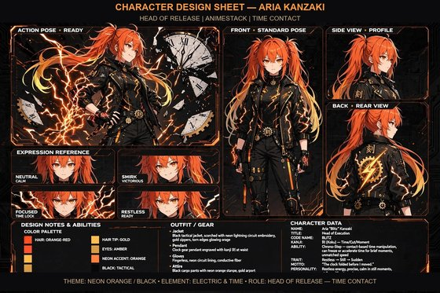
art/sheets/aria-sheet-1.jpg · 462 KB
art/sheets/reika-sheet-1.jpg · 319 KBSet 04 · wallpapers
Wallpapers — 4K
{kind=link}
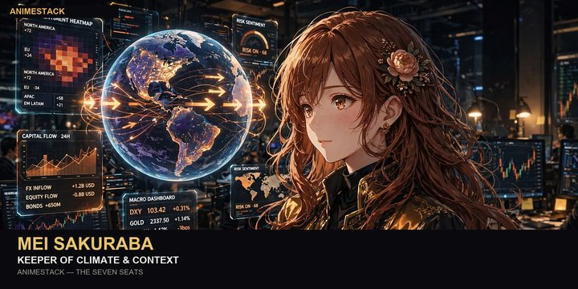
art/wallpapers/mei-stamped.jpg · 911 KB{kind=link}
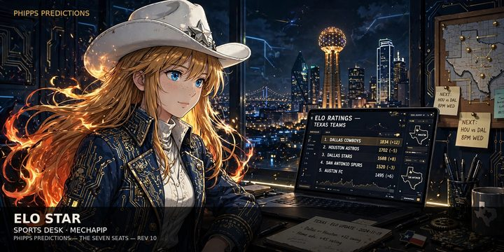
art/wallpapers/elo-stamped.jpg · 976 KB{kind=link}
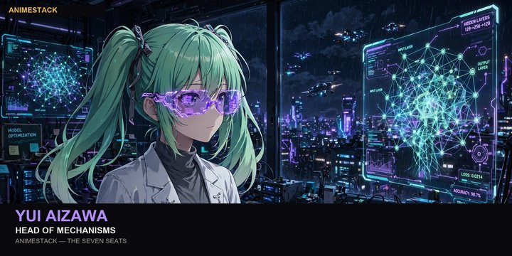
art/wallpapers/yui-stamped.jpg · 908 KB{kind=link}
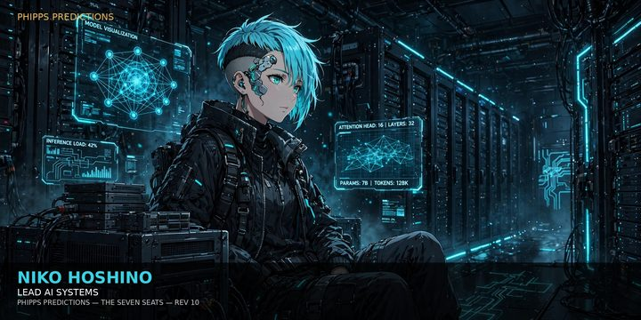
art/wallpapers/niko-stamped.jpg · 839 KB{kind=link}
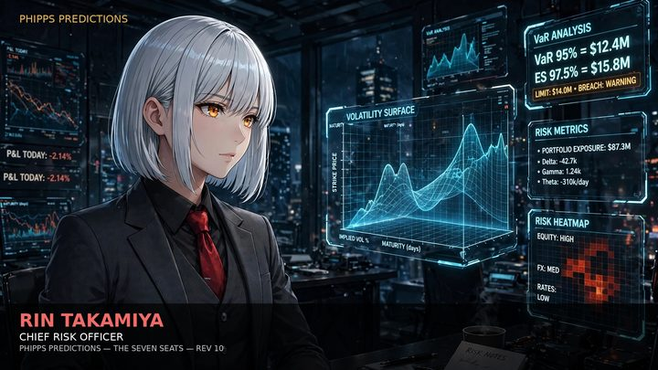
art/wallpapers/rin-stamped.jpg · 707 KB{kind=link}
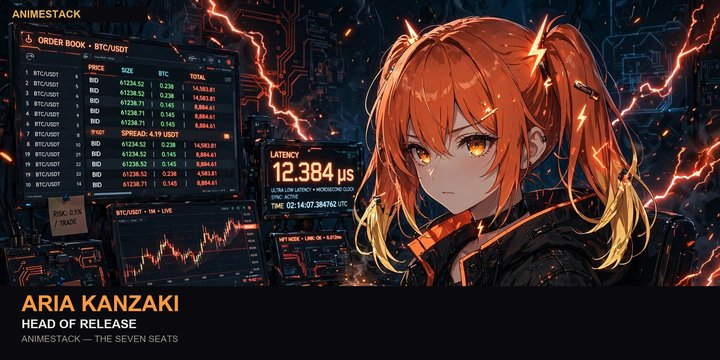
art/wallpapers/aria-stamped.jpg · 864 KB{kind=link}
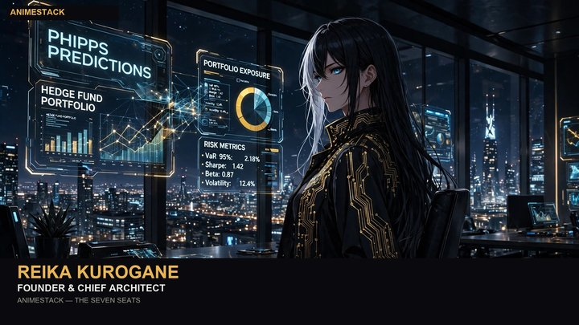
art/wallpapers/reika-stamped.jpg · 703 KBThe art ships inside the AnimeStack pack under
art/ — 21 files, one per seat per set
(dossier, sheet, wallpaper), beside the base set in assets/img/. The lore the agents read lives in
docs/seats/ and docs/lore/. No redundant pictures: each piece above is the only copy
of its image in the pack.